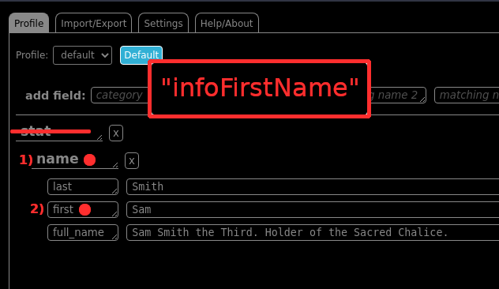
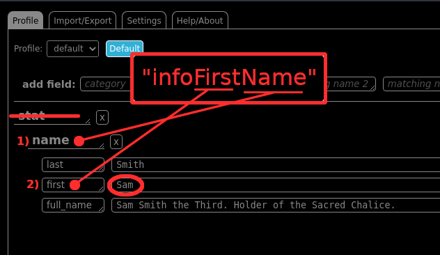

Version: 1.6
*WARNING: DO NOT SAVE PASSWORDS INTO THIS PROGRAM. IT IS NOT MEANT FOR ANY DATA THAT ARE MEANT TO BE ENCRYPTED. IF IT IS INFO YOU DON'T FEEL COMFORTABLE IN SHARING WITH JOB RECRUITERS, INTERVIEWERS OR THE HR DEPARTMENT OF ANOTHER COMPANY, DO NOT SAVE IT HERE.*
How to use:
SARA lets you set up profiles and pre-enter information for web forms. The default profile is set up for job applications, but you can create multiple profiles and use any of them as your default. SARA looks for patterns in webform elements and fields that can then be matched to an element in your profile.
The profile tab is where you'll enter your resume (or other webform input) details. Review the existing template and add/remove fields as needed for your most commonly used job sites.
Import/Export is to create a backup of your settings and details. Click Export to create a text file of your settings that can later be imported if needed.
Selecting "Auto Fill" on the Settings tab will automatically fill in any webform on a page that you load.
Also in Settings, selecting "Floating ID box" will give you a hover window with details on any element or field on a webpage that you mouse over. This option can help you set up new fields in your profile to match commonly used webform elements.
The "Ignore List" will tell autofill which sites to NOT autofill.
The "Apply List" will autofill listed sites even when "Auto Fill" is turned off.
The "Event List" should be turned on by default. If this extension uses too much power or takes too long, you can try turning it off.
For cases when autofill does not find a match for every field, or if it matched against different data, you can use the right-click menu to fill them. When filling the field this way, the value of the field will be copied into your clipboard as well.
How It Works:
This is the more advanced context for how all this works. If you want to do more than just fill out basic forms, definitely read this.
Did you know, behind every field on a web form...

...there's a bunch of information stored (property values) into it?
*What this extension does, is takes "matching names" and tries to [partial] match them to any of these "property values". It can try to match to the same field with multiple "matching names" to find what value/text you really want to fill the field with.*
Don't worry if this sounds confusing now. We'll go through an example together.
Let's say we want to match this "First Name" field. Looking at the properties of these fields, we'll just pick any one property at random. "infoFirstName" will do nicely because it's nice and descriptive of what this field is for. But also, there's a high likelihood that other forms of this type will name it similarly/have properties of a similar name.
When you go into the settings of this extension, you should see something (or you can make) like this:

If it's not obvious, here's what all these fields are:
As stated before, this extension will try to take "matching names" and partial match them to any property value. We've picked the property value of "infoFirstName".
1) So we'll have set "matching name 1" with "name" first. 2) And, under that, we'll set "matching name 2" with "first".
*NOTE: Categories are not used for matching at all. They are there for your personal organization purposes.*
1) So we'll have set "matching name 1" with "name" first. 2) And, under that, we'll set "matching name 2" with "first".
*NOTE: Categories are not used for matching at all. They are there for your personal organization purposes.*
So you can imagine it like this:

When the extension tries to see if this first name field is something it should fill, it'll try to match the word "name" first. And, if "infoFirstName" does have the word "name" in it, it'll try to see if "last", "first" or "full_name" is in the word "infoFirstName". Since "first" is, the extension will see that you want to fill this field with the value/text "Sam".

So now that this is set, we can go back to the form (might need to refresh the page if you newly added matching name and values) and through the popup menu of this extension, click "fill form".
And, as you can see, it found and filled out the first name field. It even tells you when it does this and how many fields it filled out (whether or not you can see them) for you.
And that's basically how it works. There are other functions of course, an apply list so it'll automatically fill any forms on a specific domain, fill forms on all domains (autofill), don't fill out forms on specific domains when autofill is turned on, etc. But I'll leave you to play with them and see what you can do.
By the way, if you're wondering how you can find the property values of a field yourself without being a coder, it's right here:
That's the "right click" menu (context menu). Simply right click on a field and, under the "SARA", go to "Element Properties: <something>", and it will display all the properties and property values of that field.
And that's that. If you have any further questions about the details of how it all works, it's likely that I've answered them in the FAQ below. I hope you're having a good time with this extension. And, if you're using this to fill out web forms for jobs, like I did, best of luck to you. It sucks, I know. The process can be dehumanizing. But know that someone out there thinks enough of you to help you along the way. Because, if I didn't, I wouldn't have released extension to the public.
FAQ:
Q: Is it matching case sensitive or case insensitive?
A: Case INsensitive. If there is enough demand for allowing users to set case sensitivity, I'll go back and add the feature.
A: Case INsensitive. If there is enough demand for allowing users to set case sensitivity, I'll go back and add the feature.
Q: Why do you use "matching name" in one explanation and "pattern" in another?
A: The "matching names" are actually, known to us programmers, regular expression patterns. If you have no idea what I'm talking about, don't worry about it. Not knowing understanding this will not diminish this extension's usefulness. I use "matching name" instead of pattern because it's more descriptive and informative for someone that doesn't know what "pattern" implies to programmers. With that said, I cover using regular expression later. (One liner. Don't get too excited.)
A: The "matching names" are actually, known to us programmers, regular expression patterns. If you have no idea what I'm talking about, don't worry about it. Not knowing understanding this will not diminish this extension's usefulness. I use "matching name" instead of pattern because it's more descriptive and informative for someone that doesn't know what "pattern" implies to programmers. With that said, I cover using regular expression later. (One liner. Don't get too excited.)
Q: What is "Event Fill"? What does it actually do?
A: There are a significant amount of forms online that uses a lot of modern web elements. Some of which doesn't rely on the input field's actual value to read/set values for said field. (Yes, that sounds a little dumb. But if modern web forms were good, neither of us would be here.) Instead, they listen to javascript events to know when values have been changed or when it needs to be updated or used. By turning on "Event Fill", whenever this extension fills a value into a field, it'll also fire off a bunch (3) events from the field as it's filling it in to mimic events that would have been fired when a human would paste a value into that input field. Not all modern, event driven, troublesome forms may be fixed by this, but this should get most of them.
A: There are a significant amount of forms online that uses a lot of modern web elements. Some of which doesn't rely on the input field's actual value to read/set values for said field. (Yes, that sounds a little dumb. But if modern web forms were good, neither of us would be here.) Instead, they listen to javascript events to know when values have been changed or when it needs to be updated or used. By turning on "Event Fill", whenever this extension fills a value into a field, it'll also fire off a bunch (3) events from the field as it's filling it in to mimic events that would have been fired when a human would paste a value into that input field. Not all modern, event driven, troublesome forms may be fixed by this, but this should get most of them.
Q: Should I make every pattern unique?
A: Yes, yes, a thousand times yes. Though it is possible (though manual editting of the settings. This should not be possible via this interface.) to have duplicate patterns, it provides no benefit for the user to have duplicate patterns.
A: Yes, yes, a thousand times yes. Though it is possible (though manual editting of the settings. This should not be possible via this interface.) to have duplicate patterns, it provides no benefit for the user to have duplicate patterns.
Q: What if I want to make duplicates anyways?
A: Sure, if you want. SARA should still work. But keep in mind that the search and fill functionality will probably not work as you intend it. See next question for explanation.
A: Sure, if you want. SARA should still work. But keep in mind that the search and fill functionality will probably not work as you intend it. See next question for explanation.
Q: If 2 patterns match the same field, which has priority/how is it prioritized?
A: None. The data structure that holds the pattern has no explicit order or priority (search "Does JavaScript guarantee object property order?" if you want to know more). So if 2 patterns matches the same field, there's no guarantee that the same pattern will be used every time. As such, I HIGHLY RECOMMEND THAT EVERY PATTERN BE UNIQUE.
A: None. The data structure that holds the pattern has no explicit order or priority (search "Does JavaScript guarantee object property order?" if you want to know more). So if 2 patterns matches the same field, there's no guarantee that the same pattern will be used every time. As such, I HIGHLY RECOMMEND THAT EVERY PATTERN BE UNIQUE.
Q: Why can't I auto fill those fields that asks you to attach a file/resume?
A: This actually is a purposeful limitation of the browser. It's a security measure from the makers of the browser (both firefox and chrome do this) to prevent malicious scripts from uploading files from your computer to some other location without your knowledge. (there's a way, via javascript, to do a button click.)
A: This actually is a purposeful limitation of the browser. It's a security measure from the makers of the browser (both firefox and chrome do this) to prevent malicious scripts from uploading files from your computer to some other location without your knowledge. (there's a way, via javascript, to do a button click.)
Q: Why isn't there a way to auto click buttons?
A: That would make this extension too close to a web form bot, which can be used maliciously. To avoid that, I've purposely not programmed that in.
A: That would make this extension too close to a web form bot, which can be used maliciously. To avoid that, I've purposely not programmed that in.
Q: How do I do autofill for checkboxes?
A: If the value for the pattern is anything but and empty value or the word "false", it'll check the box. Conversely, an empty value or the word "false" will UNCHECK the box.
A: If the value for the pattern is anything but and empty value or the word "false", it'll check the box. Conversely, an empty value or the word "false" will UNCHECK the box.
Q: How do I do autofill for radio buttons?
A: Since radios give you a list of options to only choose one of, if the value matches the values of one of the choices, that's the radio it'll select.
A: Since radios give you a list of options to only choose one of, if the value matches the values of one of the choices, that's the radio it'll select.
Q: What about drop downs?
A: Same idea. If the value is an option in the drop down, it'll select it.
A: Same idea. If the value is an option in the drop down, it'll select it.
Q: What can't this auto fill?
A: There's a few:
A: There's a few:
- Custom-made fields. There's a thousand and one ways to make those. I have no good way to detect them.
- Fields in iframes. Iframes are an older html element that essentially puts a webpage within a webpage. Nearly universally scorned by web developers, there shouldn't be many left that are of any interest. That said, if my assumption is incorrect and there's enough people that want it, I'd more than happy to implement it.
- Multi-select lists. Code-wise, these are the same as dropdowns but with a single difference. They have the attribute "multiple". It'd be inaccurate to say that it won't fill a multi-select list as it definitely will, but it will only fill with 1 value as there is only one value allowed per pattern. The idea is, a pattern can match a text field on one page, but a multi-select on another. As such, we don't want an array of choices to be entered for page one so page two can have multiple options select.
Q: When I press the "export" button in the "Import/Export" section, a bunch of code showed up! What is that all that? What do I do with it?
A: That's a text presentation(JSON) for all the settings for the plugin. This way, in case you ever need to, you can transfer or back up all your settings, patterns and values for this extension. If you have a friend or colleague that also uses this extension, you can also share your settings.
A: That's a text presentation(JSON) for all the settings for the plugin. This way, in case you ever need to, you can transfer or back up all your settings, patterns and values for this extension. If you have a friend or colleague that also uses this extension, you can also share your settings.
Q: Can the patterns be regular expression?
A: Yes, but it hasn't been fully tested. I forsee no functional problems with using regular expression patterns, but it may be possible to escape the HTML with regex values. (If you have no idea what any of this means, don't worry about it. It won't apply to you.)
A: Yes, but it hasn't been fully tested. I forsee no functional problems with using regular expression patterns, but it may be possible to escape the HTML with regex values. (If you have no idea what any of this means, don't worry about it. It won't apply to you.)
Q: Everything's so dark? Is there a light mode?
A: By default, I try to make all of my projects' colors and themes dark. Most people that I know that work on computers a lot prefer dark mode by default, myself included. If this is a hinderance to you, contact me and we can discuss what you need.
A: By default, I try to make all of my projects' colors and themes dark. Most people that I know that work on computers a lot prefer dark mode by default, myself included. If this is a hinderance to you, contact me and we can discuss what you need.
Q: Does this program track anything? Do you capture and/or send any personal data?
A: No. I know a lot of cheap or free programs like to, but I hate that and have no interest in people's personal info or data. Though, since this is a google chrome extension, there may be some tracking through the chrome browser itself. But, as long as I'm in charge of this extension, there will be no user tracking/gathering of personal data/information.
A: No. I know a lot of cheap or free programs like to, but I hate that and have no interest in people's personal info or data. Though, since this is a google chrome extension, there may be some tracking through the chrome browser itself. But, as long as I'm in charge of this extension, there will be no user tracking/gathering of personal data/information.
Q: I found a bug/I would like to request a new feature! Where can I contact you?
A: My contact information is in the "About" section below. Please keep in mind that any unsolicated advertisement or bulk business inquries will promptly be marked as spam and deleted.
A: My contact information is in the "About" section below. Please keep in mind that any unsolicated advertisement or bulk business inquries will promptly be marked as spam and deleted.
Q: SARA is almost what I'm looking for. I just need a small tweak here or there. Can I talk to you about it?
A: Yes! I'm okay with making personalized versions if the conditions are right. There are logistics involved so keep in mind I can't always say yes or no to the tweaks. But feel free to contact me about it.
A: Yes! I'm okay with making personalized versions if the conditions are right. There are logistics involved so keep in mind I can't always say yes or no to the tweaks. But feel free to contact me about it.
Q: I like what you do so much I'd like to support you/I would like to donate some money. Is this possible?
A: Yes. Feel free to join my locals community. If you're just looing for a one tme donation, I have ko-fi and buy me a coffee set up too.
A: Yes. Feel free to join my locals community. If you're just looing for a one tme donation, I have ko-fi and buy me a coffee set up too.
Q: I like what you're doing. Can I commission you to make something for me? / I'm starting a project of my own. Can I hire you as a freelancer?
A: Possibly, schedules and logistics permitting. Contact me and we can discuss it.
A: Possibly, schedules and logistics permitting. Contact me and we can discuss it.